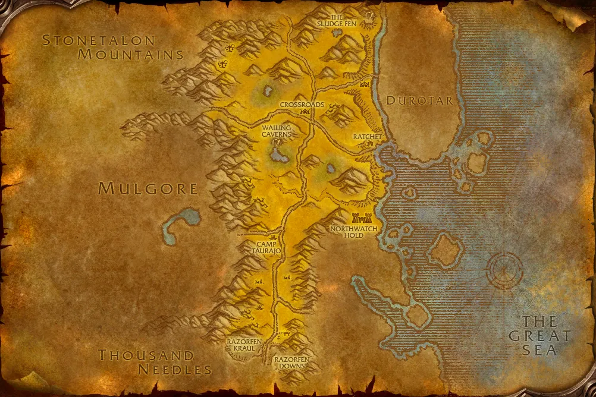

Accès
 Entrée Les Tarides 42.9, 90.2
Entrée Les Tarides 42.9, 90.2 5 joueurs · niveaux 29 à 38
5 joueurs · niveaux 29 à 38 0 quête · 7 boss
0 quête · 7 boss
Le point rouge marque l'entrée du donjon.
Toutes les zones sont sur notre carte interactive.
Le labyrinthe de ronces des huttins, au sud des Tarides.
📅 Mise à jour le 4 novembre 2026🛠 Patch 1.60.1.70755

Entrée Les Tarides 42.9, 90.2 5 joueurs · niveaux 29 à 38 0 quête · 7 bossLe point rouge marque l'entrée du donjon.
Toutes les zones sont sur notre carte interactive.
| Objet | Type |
|---|---|
| Heaume du phacochère | Tête |
| Démembreur | Deux mains |
| Objet | Type |
|---|---|
| Hache à crocs | Une main |
| Anneau d'Agamaggan | Doigt |
| Coeur d'Agamaggan | Bouclier |
| Objet | Type |
|---|---|
| Jambières de Ferine | Jambes |
| Croc de swinetusk | Une main |
| Objet | Type |
|---|---|
| Amulette stygienne en os | Cou |
| Arc du Traqueur nocturne | Distance |
| Mantelet d'aile de vampire | Épaules |
| Objet | Type |
|---|---|
| Sceptre de nécrorateur | Main droite |
| Robe de nécrorateur | Torse |
| Mantelet de nécrorateur | Épaules |
| Objet | Type |
|---|---|
| Perce-fer | Deux mains |
| Objet | Type |
|---|---|
| Coiffure de Whisperwind | Tête |
| Bâton d'esprit du vent | Deux mains |
Butin d'après les données de WoW Classic : Forever a ajouté de nouveaux objets dans les donjons, la liste sera complétée en jeu. Seuls les objets de qualité inhabituelle et mieux sont listés. Passe la souris sur un objet pour voir ses caractéristiques (info-bulle Wowhead), ou clique pour ouvrir sa fiche.
Pas de quête connue pour ce donjon pour l'instant.
Noms des quêtes, des PNJ et des objets d'après les données du jeu (Polestar, CC BY 4.0, et Factoruide/Questie).